聊天首頁Home
一打開，今天就在眼前
Open it. Today is right there.
最上面那張卡是今天：下一件事幾點、還有幾堂課、幾個行程、幾項待辦。今天的事過完，它會換成明天。
The card on top is today: what's next and when, and how many classes, plans and to-dos are left. When today is done, it turns to tomorrow.
iPhone 上的記事小機器人A notes app with a robot inside
作業、考試、行程、待辦、記帳，像傳訊息一樣打一句，到時候提醒你。
Homework, exams, events, to-dos and spending. Type it like a text, and Novi reminds you when it matters.
適用 iPhone。記錄留在手機，不用帳號。
For iPhone. Your records stay on your phone, no account.

親手試試Try it yourself
像傳訊息給朋友一樣打一句，Novi 自己判斷這是作業、考試、行程、待辦還是記帳。中文、英文、日文、韓文都看得懂，判斷錯了，點一下就能改。
Type one line the way you'd text a friend. Novi works out whether it's homework, an exam, an event, a to-do or spending. It understands Chinese, English, Japanese and Korean. Guessed wrong? Tap to change it.
這是網頁上的簡化示範，分類在你的瀏覽器裡完成，不會送出去。App 看得懂的說法更多。
A simplified demo that runs in your browser; nothing is sent anywhere. The app understands far more.
聊天首頁Home
最上面那張卡是今天：下一件事幾點、還有幾堂課、幾個行程、幾項待辦。今天的事過完，它會換成明天。
The card on top is today: what's next and when, and how many classes, plans and to-dos are left. When today is done, it turns to tomorrow.
課業Study
作業和考試放在一起，每一筆都有倒數。快到期會變色，逾期會提醒你。長按圓圈完成，會有彩帶。
Homework and exams in one list, each with a countdown. It changes colour when it's close and flags what's overdue. Hold the circle to finish, with confetti.
行程與待辦Plans & to-dos
月曆上每一天底下直接顯示那天有什麼。待辦可以不寫日期，想到就記。
The calendar shows what's on each day, right under the date. To-dos don't need a date; jot them down as they come.
記帳Spending
「午餐 120」自動歸到餐飲。圓餅圖看這個月花在哪，可以切換月份看以前的紀錄。
"lunch 12.5" lands in Food on its own. A pie chart shows where the month went; flip back to earlier months any time.
讀書計時Focus timer
5、15、25、45 分鐘，Pro 可以自訂 1 到 180 分鐘。Novi 陪你專心，完成拿一顆糖果。
5, 15, 25 or 45 minutes, or any length from 1 to 180 with Pro. Novi keeps you company, and a finished session earns a candy.
課表與成績Timetable & gradesPRO
每週課表一眼看完，撞堂會提醒。各科成績算出學期平均和 GPA 估算，還告訴你剩下要考幾分。
A weekly timetable that flags clashes. Grades add up to a term average and a GPA estimate, and show what you need on the rest.
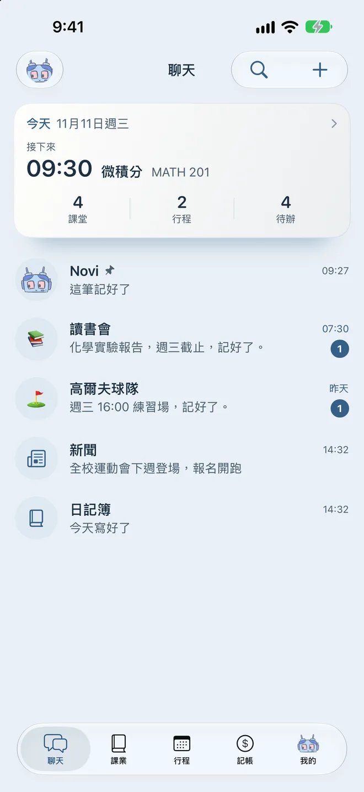
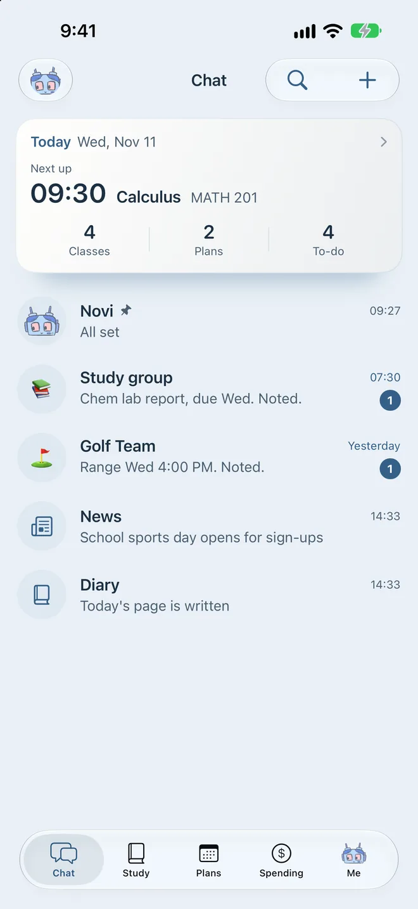
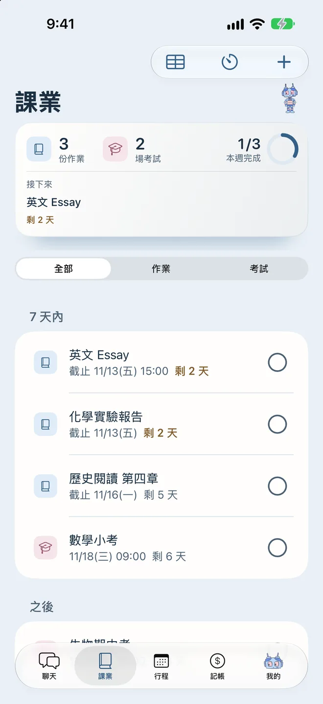
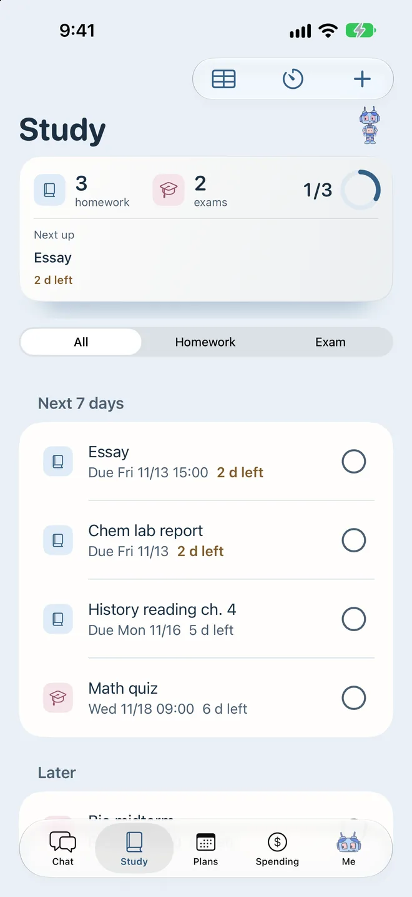
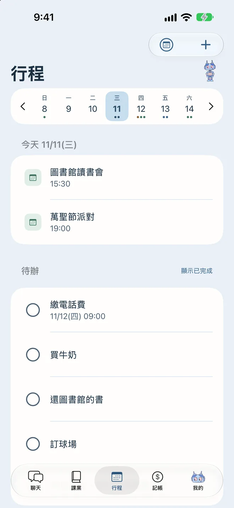
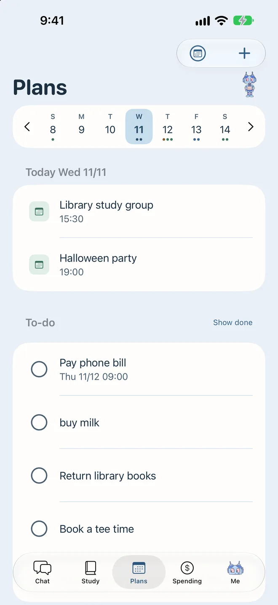
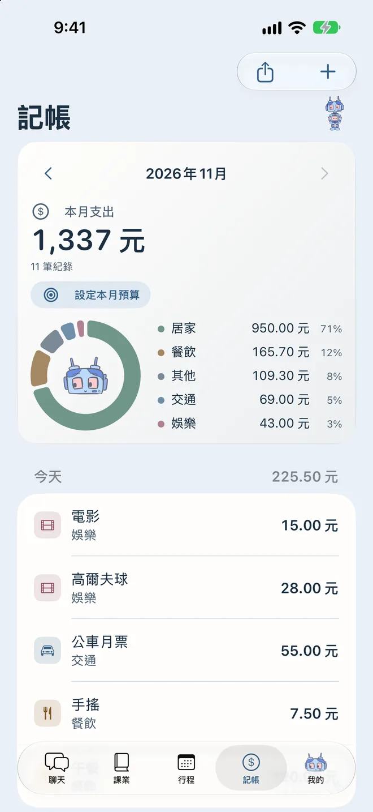
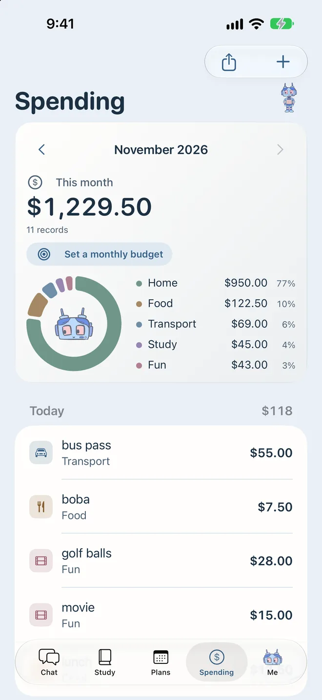
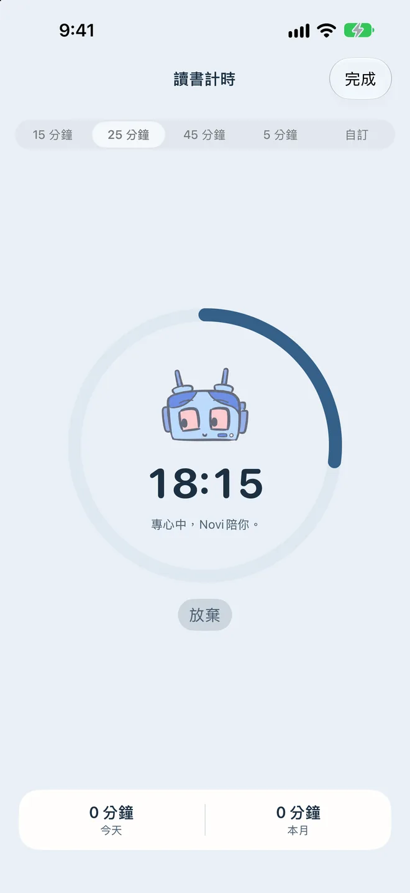
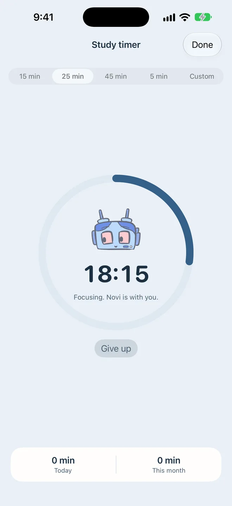
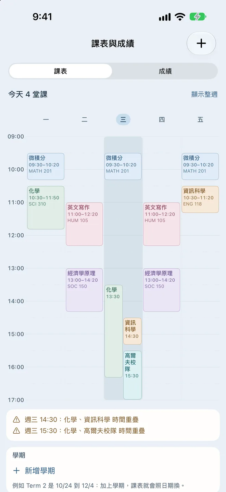
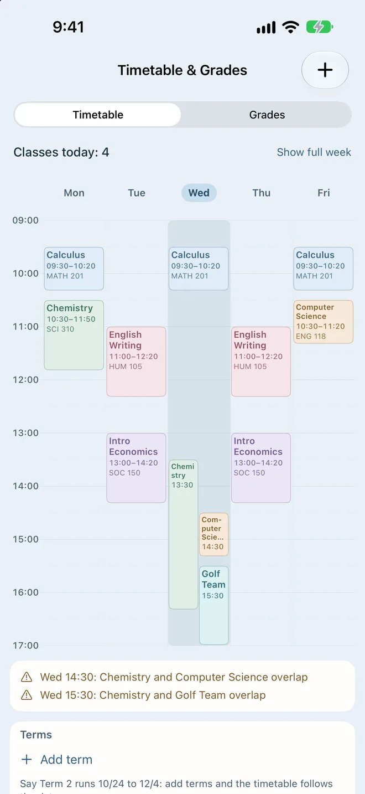
Novi 的衣櫥Novi's wardrobe
在 App 裡多開幾天就多一件衣服，節日還有限定造型。下面先挑一套，讓帶路的 Novi 穿給你看。
In the app, the wardrobe grows as you keep coming back, and holidays bring their own outfits. Pick one below and your guide will wear it.
Novi Pro
打一句分類、提醒、課業、月曆、待辦、記帳、新聞，全部免費。Pro 有買斷和訂閱兩種，各地價格以 App Store 顯示為準。
Sorting, reminders, study, calendar, to-dos, spending and news are all free. Pro comes as a one-time purchase or a subscription; the App Store shows the price for your region.
US$0
不用帳號，沒有廣告。
No account, no ads.
US$3.99
付一次，下表的 Pro 功能永久擁有。
Pay once and keep the Pro features below for good.
US$39.99 ／年/ year
或 US$5.99／月。所有 Pro 功能，再加上 AI 秘書；新訂閱可免費試用 1 週。
Or US$5.99 a month. Every Pro feature plus the AI secretary, with a 1-week free trial for new subscribers.
| 功能Feature | 免費Free | Pro |
|---|---|---|
| 打一句自動分類One line, sorted for you | ||
| 提醒Reminders | ||
| 課業、月曆、待辦、記帳Study, calendar, to-dos, spending | ||
| 新聞News | ||
| 衣櫥Wardrobe | 多開幾天解鎖Unlocks as you use Novi | 立刻全開All open right away |
| 日記簿，可用 Face ID 上鎖Diary with Face ID lock | —不含Not included | |
| 動態島陪讀Focus timer on the Dynamic Island | —不含Not included | |
| 讀書計時Focus timer | 5、15、25、45 分鐘5, 15, 25 or 45 minutes | 自訂 1 到 180 分鐘Any length, 1 to 180 minutes |
| 自訂簡報Custom briefs | 1 個1 | 無上限Unlimited |
| 聊天室背景Chat background | 內建背景Built-in backgrounds | 也能用自己的照片Your own photo too |
| 語氣和稱呼Reply tone and nickname | —不含Not included | |
| 課表與成績，含 GPA 估算Timetable and grades, with a GPA estimate | —不含Not included | |
| 完整備份Full backup | —不含Not included | |
| 月回顧分享卡Monthly recap card | —不含Not included |
AI 秘書看得到你接下來 7 天的行程，幫你排一週計畫、在簡報裡寫建議、提醒撞期，也能用講的一次改好幾筆。它用的是雲端 AI，所以只在訂閱方案裡。訂閱會自動續訂，可隨時到「設定 → Apple 帳號 → 訂閱」取消。買斷包含之後新增的 Pro 功能，需要持續付費的雲端服務除外。
The AI secretary sees your next 7 days: it plans your week, writes advice into briefs, warns about clashes and changes several items from one sentence. It runs on cloud AI, so it is part of the subscription only. The subscription renews automatically; cancel any time in Settings → Apple Account → Subscriptions. The one-time purchase includes later Pro features, except cloud services with ongoing costs.
隱私Privacy
作業、行程、記帳和聊天都存在手機裡，我們看不到。刪掉 App，資料就一起刪掉。
Homework, plans, spending and chats are stored on your phone, where we can't see them. Delete the app and the data goes with it.
Novi 只在三種時候連網：讀新聞、替天氣簡報查預報，以及你自己打開 AI 秘書的時候。打開後，你打的那句話和接下來 7 天的事項會經過我們的伺服器交給雲端 AI，伺服器不保存內容。
Novi goes online for three things only: reading the news, looking up a forecast for weather briefs, and the AI secretary if you turn it on. Then the line you typed and your next 7 days of items pass through our server to a cloud AI, and the server keeps none of it.
閱讀完整隱私權政策 →Read the full privacy policy →支援Support
找不到答案？來信 jerrytai8888@gmail.com，通常幾天內回覆。
Can't find it here? Write to jerrytai8888@gmail.com. Replies usually come within a few days.
在「聊天」直接打字，不用加開頭：
Essay due fri 3pm、化學報告 11/5數學小考 下禮拜三明天 3點 練球記得買牛奶午餐 120查詢：今天有什麼、這週有什麼、本月支出。完整說明在 App 的「設定 → 聊天怎麼打」。
到該筆所在的列表點它，就能改類型、時間和備註。
作業：截止前 1 天、前 2 小時。考試：前 3 天、前 1 天、前 1 小時。行程：前 1 小時和前 5 分鐘。每一種都能在「設定」改時間和次數。有日期的待辦：時間到。要先在「設定」開啟通知。
資料存在手機本機；移除 App 會一併刪除。開啟 iCloud 裝置備份可以跟著備份，Pro 也能把全部資料匯出成一個檔案。
用同一個 Apple 帳號打開「我的 → 齒輪 → Novi Pro」，按「恢復購買」，不會再收一次錢。
付款和退款都由 Apple 處理，請到 reportaproblem.apple.com 申請。
可以。「設定 → 語言」可選跟隨系統、繁體中文、English、日本語或 한국어。
問題與建議請來信 jerrytai8888@gmail.com，通常會在幾天內回覆。
Type in Chat, no command word needed:
Essay due fri 3pm, Chem report 11/5Math quiz next wedtomorrow 3pm practiceremember to buy milklunch 12.5Ask: today, this week, this month spending. The full list is in the App under Settings → What to type.
Tap the item in its list to change the type, time and notes.
Homework: 1 day and 2 hours before. Exams: 3 days, 1 day and 1 hour before. Events: 1 hour and 5 minutes before. Each kind can be changed in Settings. Dated to-dos: at the time. Turn on notifications in Settings first.
Data lives on your phone; deleting the App deletes it. iCloud device backup includes it, and Pro can export everything to one file.
With the same Apple Account, open Me → gear → Novi Pro and tap Restore Purchases. You won't be charged again.
Apple handles payments and refunds. Request one at reportaproblem.apple.com.
Yes: Settings → Language, choose Follow system, 繁體中文, English, 日本語 or 한국어.
Questions and suggestions: jerrytai8888@gmail.com. Replies usually within a few days.